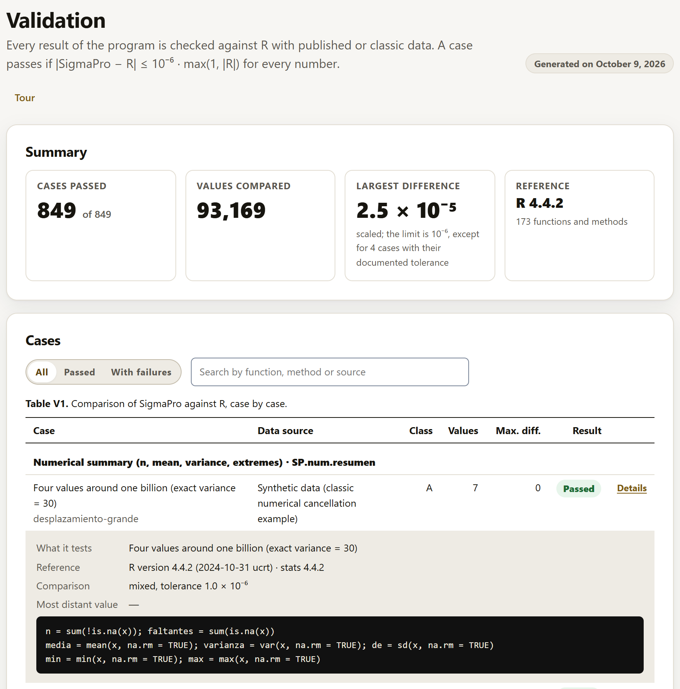

SigmaPro does not ask you to take it on trust: every result of the program is compared against R, with published or classic data, and the report of that comparison comes inside the app. This chapter explains the criterion, how to read the block, what else is checked besides the numbers, and how to repeat the whole validation on another computer.
A validation case is a dataset (from a book, a paper or an R package), a SigmaPro computation and R’s answer to the same computation. The case passes if every number in R’s answer matches SigmaPro’s:
|SigmaPro − R| ≤ 10−6 · max(1, |R|)
That is, six digits: absolute for numbers smaller than 1 and relative for larger ones. A few rules refine it: a tiny p value (smaller than 10−6) must also match in its relative digits, so that a p of 10−20 does not pass just for being “almost zero”; R’s missing values and infinities are expected as missing values and infinities; and text is compared exactly. Every key in R’s answer is compared, and every one of them must exist in SigmaPro’s result.
R’s answers are computed by R scripts kept alongside the app (tests/r/), with R 4.4.2 and the reference packages for each method (car, emmeans, lme4, survival, agricolae and others). SigmaPro does not use R to compute, except in the R engine methods (section 4.6): its core is its own, and R is the judge.
The block shows the latest validation report, the same one that is generated when the tests are run, with its date at the top right. So that the app opens quickly, the full report is loaded the first time you open the block: the summary appears immediately and, for a moment, the table says “Loading the cases…”.

Below the table, a card summarizes the other checks (section 8.4), each with its date, its result and its detail.
Not all numbers can be compared in the same way. Each case carries a class that says what kind of computation it is and how it is validated.
| Class | What it is | How it is validated |
|---|---|---|
| A | Closed formula or exact algorithm: sums of squares, F, t, estimators, their p values. | Against R, with 10−6. |
| B | R uses a published approximation: the Shapiro-Wilk p, the quantiles of the studentized range. | The same published algorithm is programmed. If R itself is less precise by design, the reference is computed in R with more precision and the finding is documented. |
| C | R uses randomness: Dunnett by default, the simulated Fisher test. | A reference without randomness, by high-precision numerical integration; R’s default value, separately, with the tolerance of its own error. |
| D | Iterative optimization: Box-Cox, REML, generalized models, nonlinear models, ARIMA. | Both programs with tightened convergence criteria; 10−6 on the converged result, or the documented tolerance of the path when R itself gives no more digits. |
| E | Tables from books and papers, printed with 2 to 4 decimals. | Half a unit of the last printed digit. The book or paper is cited, not the program it was computed with. |
When the tolerance of a path is not 10−6, the reason is written in the case and appears in the published validation report; a tolerance is never loosened without saying why. The class B findings (R functions that, by design or by rounding, give fewer digits than requested) are described one by one in the validation document that comes with the app.
Besides the cases against R, the test battery checks fifteen other things, each with its own independent program. Each one leaves its result, with its date, in the other checks card of the Validation block.
| Check | What is checked |
|---|---|
| The equivalent R code | The code the app shows (section 4.5) is run in R, scenario by scenario, and must give the same numbers as the app. |
| The exports | The spreadsheet is read with R, cell by cell; the .docx, with an XML reader; the PDFs, PNGs and TIFFs, with image readers; the project, with its hashes, its R code run in full and reopened with the same tables; and autosave, recovered in a new page. |
| Performance | With about 100,000 rows, each common analysis within its time target. |
| Privacy and offline use | With data, analyses and exports, no data leave the browser; with no network, the app opens, computes and exports. |
| Accessibility | Every block and the analyses of every family, at desktop and phone widths, in light and dark mode: AA contrast of the text, names and labels for screen readers, no horizontal overflow, and keyboard use. In addition, an independent automated checker applies the WCAG 2.1 rules, levels A and AA, to each scenario; it is used only in the tests and is not part of the app. |
| The English interface | Every text of the interface, the results and the examples has its translation; each validation case gives the same numbers in Spanish and in English; and no result built in English leaves untranslated text. |
| Regression of results and reports | The fingerprint of each result (all its numbers) and of its report (tables, conclusions, traffic light and notes) is compared with the stored one: a number or a text that changes unintentionally is caught before a version is released. |
| Opening sequence | The opening screen (section 1.6) appears before the interface, ends on Start, is dismissed with Esc, respects the reduced-motion preference, fits on a phone and runs smoothly. |
| Fundamentals of each analysis | Each analysis has its fact sheet (chapter 9) with its nine sections in Spanish and in English; its related analyses, its example dataset and its columns exist in the app; the example runs with the method; and every formula is converted for display. |
| Glossary and “See it in action” | Each glossary term (section I.6) opens its example, and the highlighted number exists in the table it names, in Spanish and in English. |
| What guides you | The three paths of Home, the history, the empty states, the decision tree, the help, the tours of the ten blocks, presentation mode, the errors in plain words, and Validation opened from a direct link. |
| Quality of what you read | Each reading scale (section 4.5) is tested at each of its boundaries: just below, at the limit and just above. And every number in the conclusions, in In a nutshell and in the paragraphs of all the cases must be in the result or its tables, at the rounding with which it is written, or follow from them by a calculation the text states; a control with altered numbers measures whether the comparison detects them. |
| Links and icons of the app | Every file the page names exists; every link to a block, a fact sheet, a glossary term or an analysis in the tree leads to something that exists, including those the app builds on the fly; the icons measure what they declare; and the external addresses the app shows respond (this part needs internet). |
| Speed and best practices | A web page auditor measures the loading of Home, Fundamentals, the Suite and Validation on a phone with a slow network and on desktop, serving the app as on its published page: performance, accessibility, best practices and search engine visibility, with 90 or more out of 100 in each. It is not part of the app either. |
| Links and logos of the LABG Suite | Each app of the suite (chapter 10) has its logo and its data, or a declared “PENDIENTE” (pending); the suggestion rules name apps that exist; and the page, the repository and the manual of each published app respond. It needs internet: it checks the pages of the other apps, something the app never does. |
A method does not appear in the app until it has validation cases and all of them pass. The app checks this on its own when it opens, with the validation report it carries: if a case of a method failed, the method would disappear from the catalog and, if the assistant suggested it, the app would say that its validation has not passed yet instead of computing it. That is why everything this manual describes is validated.
The validation does not depend on whoever did it: with R and node installed, anyone can regenerate the references with their own R and compare again.
You need R (4.4 or later) with the packages each case requires, and node (20 or later; nothing needs to be installed with npm). From the SigmaPro folder:
Rscript tests/r/generar-todo.R # regenerates the references with your R node tests/motor-r.mjs # the R engine methods, in the browser node tests/correr.mjs # compares and writes the reports node tests/navegador.mjs # the same in the browser, via file:// node tests/codigo-r.mjs # the app's R code gives the same in R node tests/exportar.mjs # the exports, with independent readers
motor-r.mjs opens the app in the browser and downloads the R engine, so it needs internet; it runs before correr.mjs, which merges its cases into the report. correr.mjs writes the report that the Validation block shows and a version for publishing, in HTML and in CSV. The other checks of section 8.4 have their own programs in tests/: idioma.mjs, regresion.mjs, calidad.mjs, intro.mjs, fundamentos.mjs, glosario.mjs, orientacion.mjs, enlaces.mjs, suite-enlaces.mjs, sin-conexion.mjs, rendimiento/medir.mjs, rendimiento/lighthouse.mjs and accesibilidad/auditar.mjs; the two link checks need internet. The two external tools, the accessibility checker and the speed auditor, are installed separately, and an environment variable tells the tests where to find them: without the checker, the accessibility audit runs everything else and warns that that part was not done; without the auditor, the speed measurement does not run.
On Windows, tests/pruebas.ps1 finds R, node and the browser and runs the comparison against R, the equivalent R code, the English interface, the regression, the fact sheets, the quality of what you read, the browser test, the glossary, what guides you and the opening sequence. With -R, it first regenerates the references; with -Completo it adds the exports, privacy, performance and accessibility (about 15 minutes) and, if the speed auditor is installed, its measurement (about as long again); and with -Red, the checks that need internet: the R engine and the links of the app and of the suite.